Inclusão alimentarOpções para diferentes necessidades.
PROJETO PROA · APRESENTAÇÃO INSTITUCIONAL
Mais possibilidades
à mesa. Menos peso
na rotina.
O Oullin conecta pessoas com necessidades alimentares específicas a pequenos negócios que oferecem opções pensadas para diferentes preferências e restrições.
Inclusão alimentar · Praticidade ·
Conexão
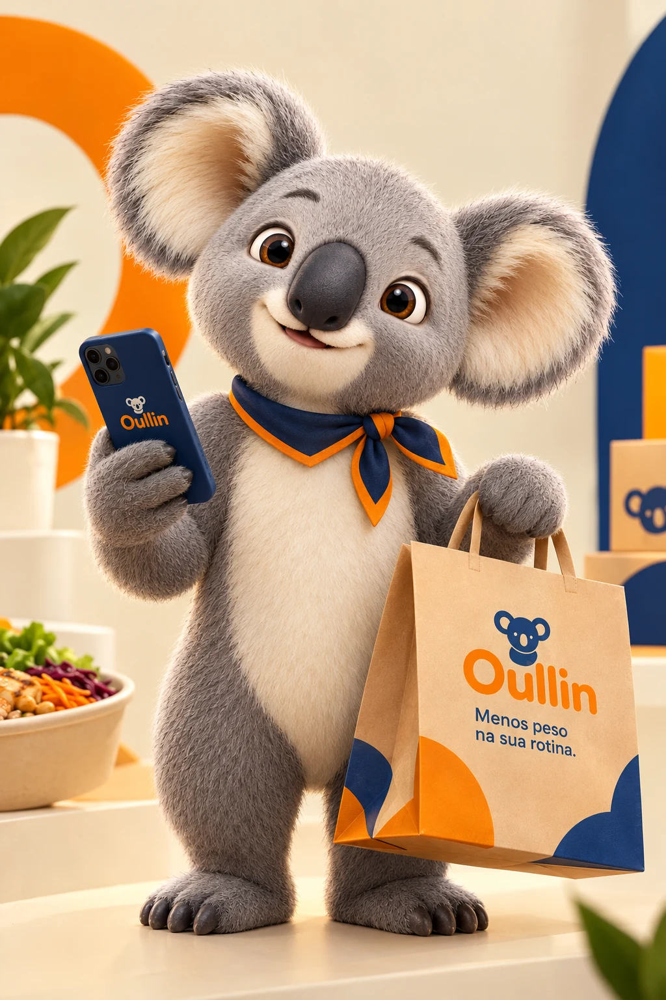
OULLINMenos peso
na sua rotina.
na sua rotina.
UMA MARCA FEITA PARA INCLUIR
IDENTIDADE VISUAL · POSICIONAMENTO · ESTRATÉGIA DE MARCA01 /
08
01 — A MARCA
UMA PLATAFORMA DE ALIMENTAÇÃO INCLUSIVA
O que é
Oullin?
O Oullin é uma plataforma de delivery especializada em conectar consumidores com restrições ou necessidades alimentares específicas a microempreendedores que oferecem produtos adequados a esse público.
Mais do que facilitar um pedido, a proposta é tornar a descoberta de refeições mais simples, organizada e transparente — enquanto amplia a visibilidade de pequenos negócios do setor alimentício.
Entenda a proposta de valorPraticidade na organizaçãoMais clareza na rotina de refeições.
Valorização de negóciosMais conexão com quem produz.
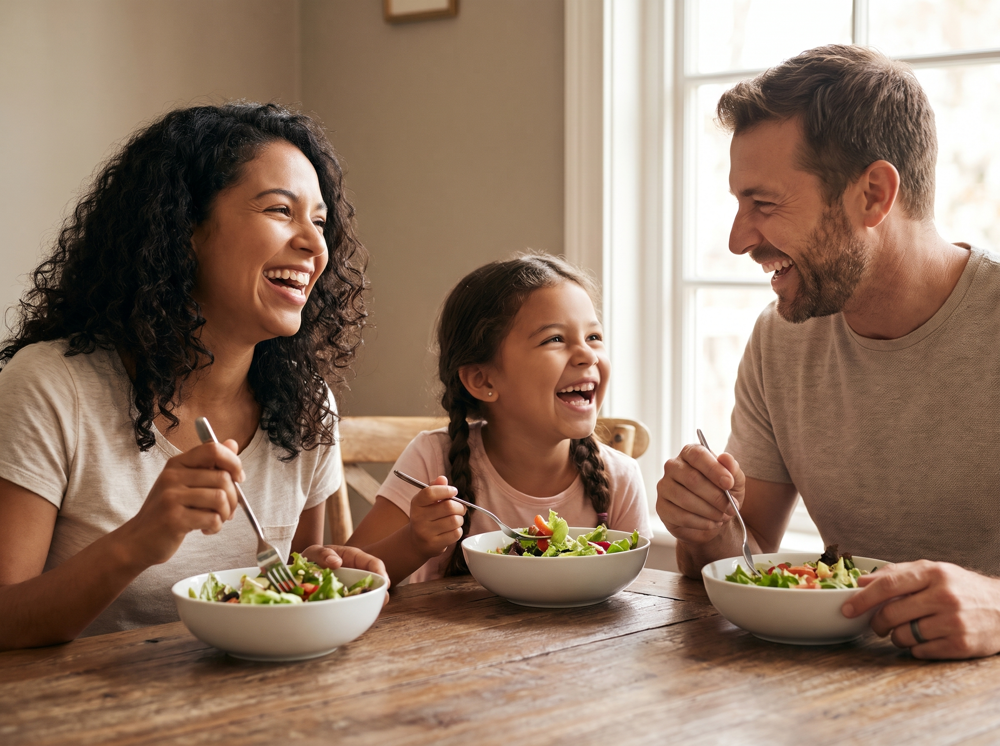
ESCOLHAS DO DIA A DIAComer bem deve caber
na vida real.
na vida real.
02 — O PROBLEMA
Encontrar uma opção adequada ainda pode exigir muito esforço.
Pessoas com restrições alimentares frequentemente precisam pesquisar diferentes estabelecimentos, conferir ingredientes e buscar informações antes de escolher uma refeição.
- 01Dificuldade para localizar opções compatíveis com necessidades específicas.
- 02Informações sobre ingredientes e alergênicos nem sempre estão claras.
- 03Pequenos empreendedores especializados têm dificuldade para alcançar esse público.
03 — A SOLUÇÃO
TECNOLOGIA COM UM PROPÓSITO HUMANO
Uma experiência pensada
para cada pessoa.
O Oullin aproxima necessidades e opções de alimentação em uma experiência mais personalizada, com foco em clareza, organização e conexão com pequenos negócios.
01 / PERSONALIZAÇÃO
Filtros alimentares específicos
Ajuda a encontrar opções de acordo com restrições e preferências informadas pelo consumidor.
02 / ORGANIZAÇÃO
Planejamento semanal
Uma proposta para organizar refeições de diferentes dias e reduzir o esforço de decidir a cada momento.
03 / TRANSPARÊNCIA
Informações mais claras
Ingredientes e alergênicos declarados pelos vendedores, com orientação para confirmação direta quando necessário.
04 / CONEXÃO
Foco em microempreendedores
Mais visibilidade para pequenos restaurantes, produtores de marmitas, confeiteiros e negócios especializados.
As funcionalidades são apresentadas como proposta de valor do projeto; a disponibilidade de cada recurso depende da evolução da plataforma.
04 — PARA QUEM É O OULLIN
DOIS PÚBLICOS, UMA CONEXÃO
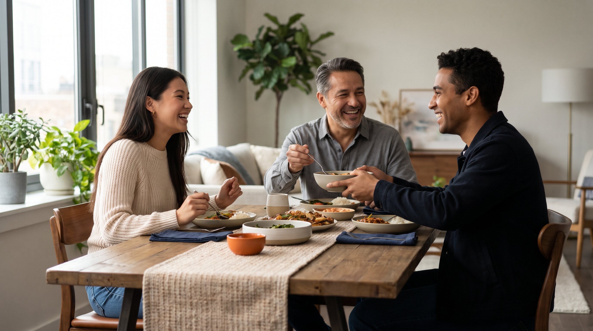
01 / CONSUMIDORESPara quem precisa encontrar opções que façam sentido.
Pessoas que procuram refeições alinhadas às suas necessidades e preferências alimentares.
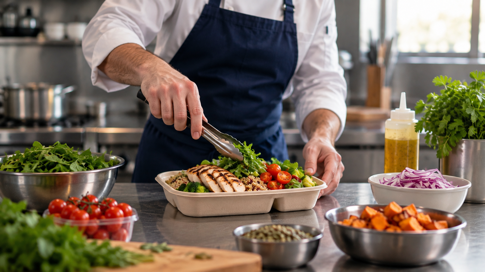
02 / MICROEMPREENDEDORESPara quem prepara e merece ser encontrado.
Pequenos negócios que trabalham com alimentação inclusiva, especializada ou personalizada.
05 — VARIEDADE À MESA
EXEMPLOS VISUAIS DE CATEGORIAS
Mais possibilidades.
Mais escolhas.
As imagens ilustram categorias de refeições e possibilidades de alimentação; não representam um catálogo de produtos disponíveis.
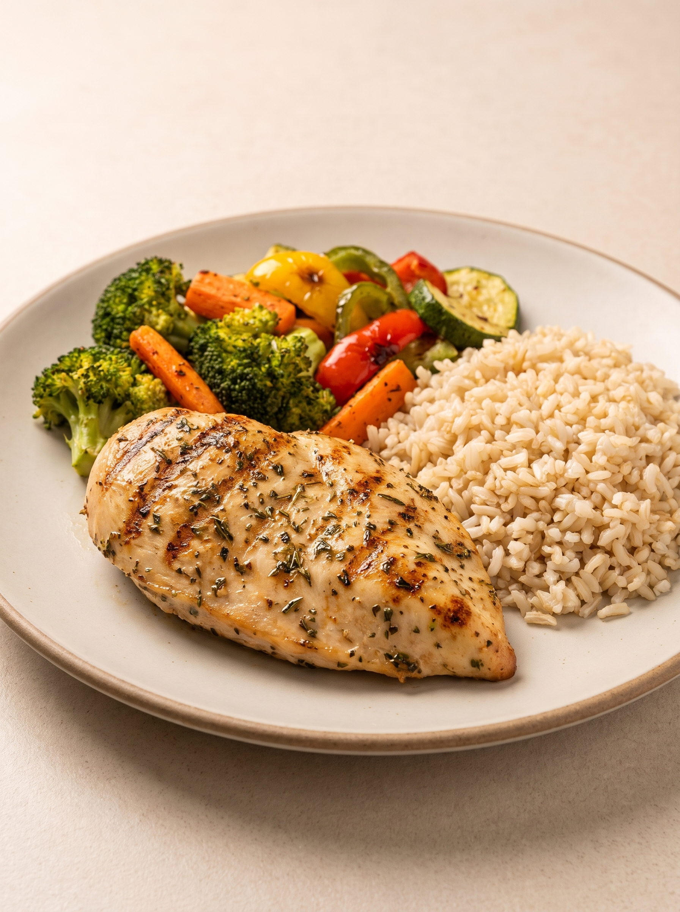
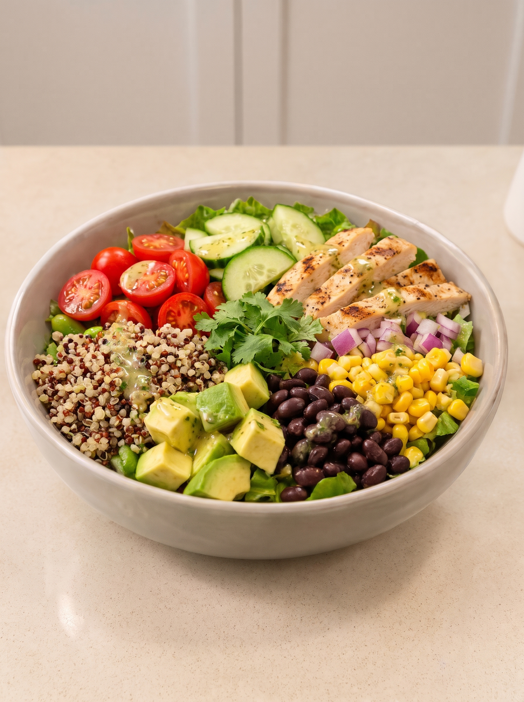
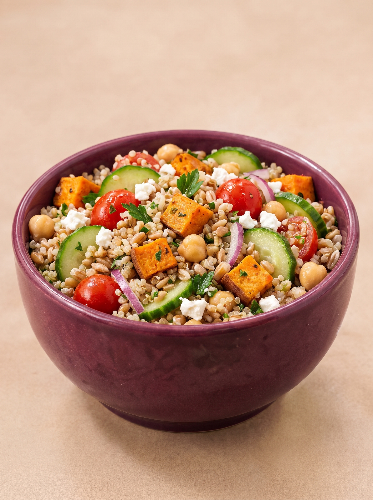
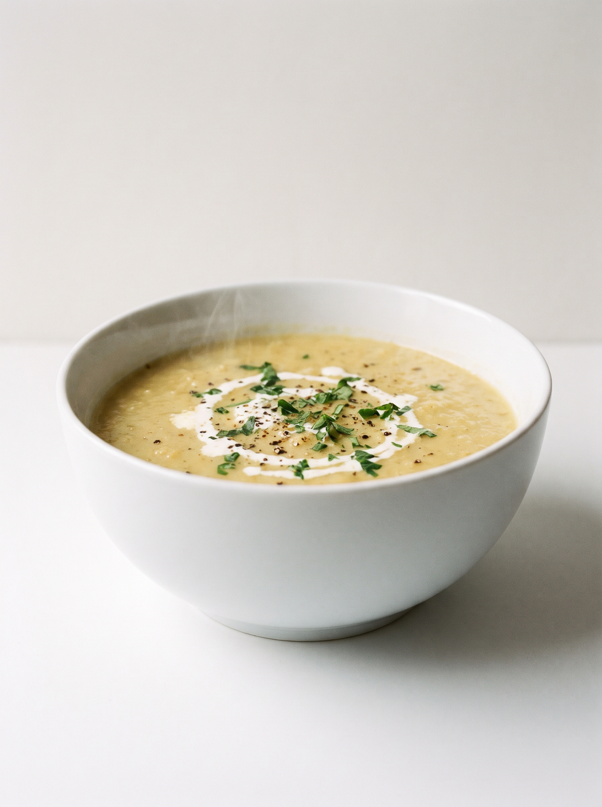
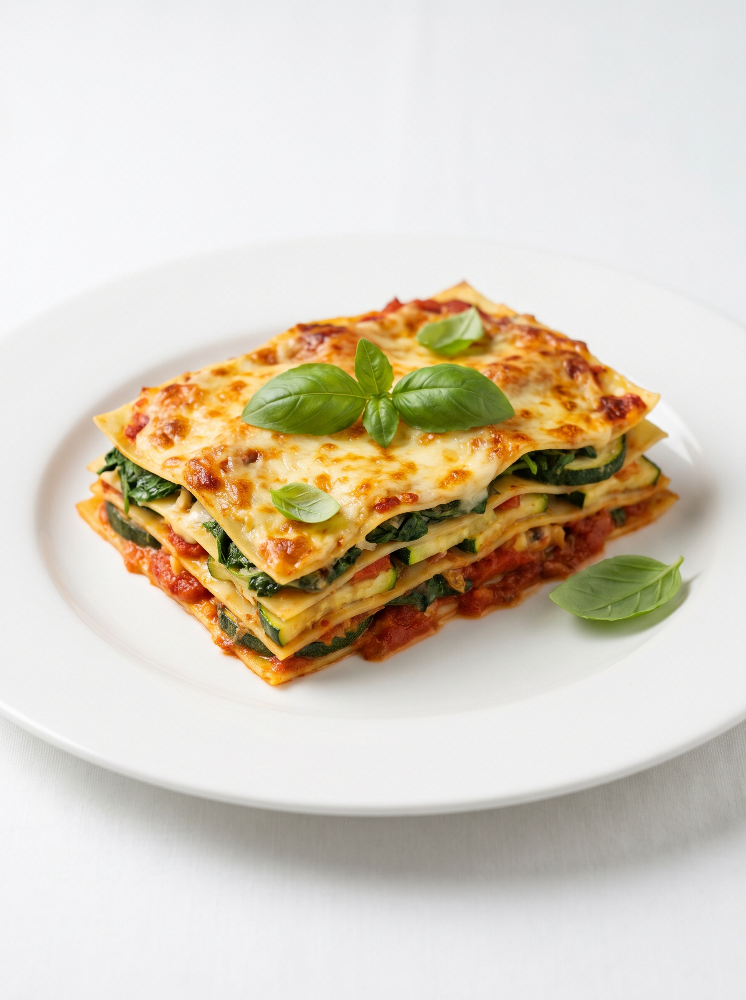
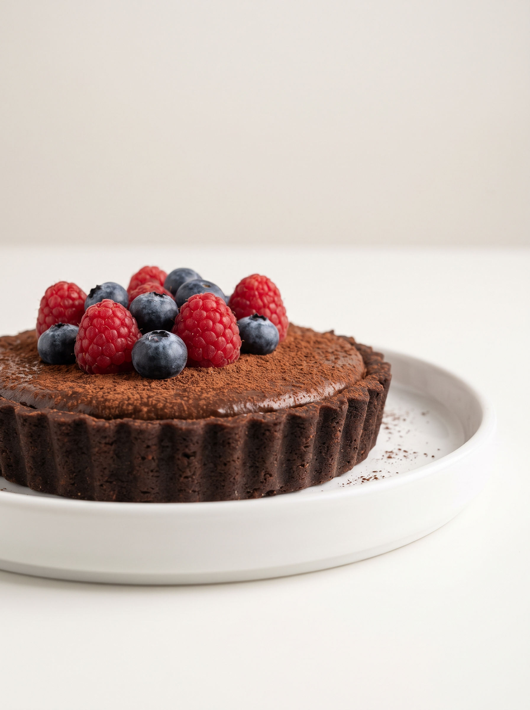
06 — VALORIZAÇÃO DO EMPREENDEDOR
QUEM PRODUZ TAMBÉM FAZ PARTE DA SOLUÇÃO
Pequenos negócios.
Novas oportunidades.
O Oullin busca aproximar consumidores de empreendedores que desenvolvem produtos para diferentes necessidades alimentares, ampliando a descoberta e a visibilidade desses negócios.
- Mais visibilidade para produtos especializados.
- Conexão com um público que procura opções específicas.
- Espaço para negócios locais e produção independente.
OULLIN / CONEXÃOQuem faz com cuidado
merece ser encontrado.
merece ser encontrado.
NEGÓCIOS
LOCAIS
LOCAIS
07 — IDENTIDADE VISUAL
UM SISTEMA VISUAL FÁCIL DE RECONHECER
LOGOTIPO PRINCIPAL
O coala azul-escuro abraçado à letra O laranja traduz acolhimento, proximidade e cuidado.
PALETA OFICIAL
Direção de uso sugerida: 60% neutros · 30% laranja · 10% amarelo e destaques.
TIPOGRAFIA DO MANUAL
Aa
SF Pro RoundedTítulos, chamadas e botões
Aa
ModerusticTextos, descrições e interface
01Preservar o logotipo
Não esticar, achatar, girar ou alterar as proporções e cores oficiais.
02Manter a hierarquia
Usar laranja e amarelo como acentos; creme e branco equilibram a composição.
03Fotografia próxima
Priorizar comida real, pessoas, empreendedores e momentos espontâneos.
08 — TITU E BIBLIOTECA DE ASSETS
UM PERSONAGEM, MUITAS FORMAS DE CONTAR A MARCA
Este é o Titu.
O mascote acompanha a comunicação do Oullin com simpatia e proximidade. Sua aparência de referência é cinza, com lenço azul-marinho e acabamento laranja.
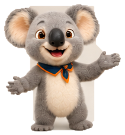
PNG TRANSPARENTETitu ·
Boas-vindasBaixar imagem ↗
REFERÊNCIA 3DTitu · ApresentaçãoBaixar imagem ↗


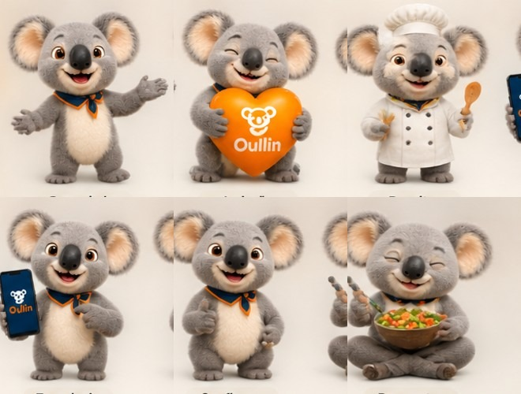
PAINEL DE REFERÊNCIATitu · Variações de poseBaixar imagem ↗Biblioteca de recursos Oullin
Baixar pasta de assets
Logotipo, Titu, fotografias de refeições, pessoas e aplicações da marca.
09 — APLICAÇÕES DA MARCA
A IDENTIDADE EM CONTATO COM O MUNDO REAL
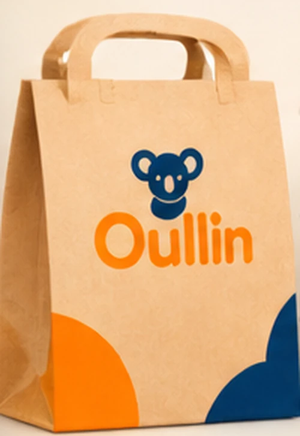
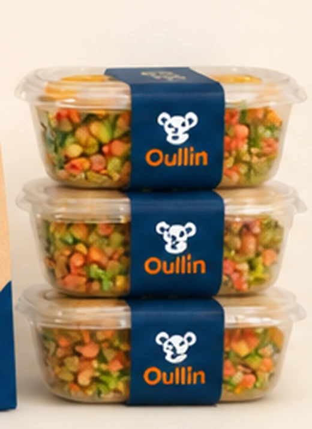
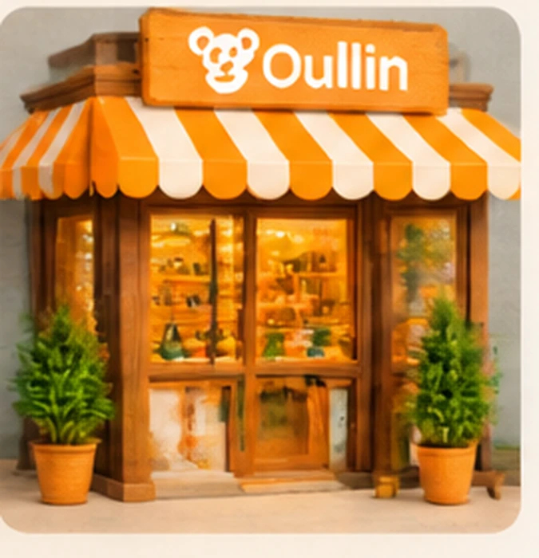
10 — OPORTUNIDADES DE PARCERIA
CONSTRUIR UMA REDE MAIS INCLUSIVA
Vamos fazer
parte dessa conexão?
O Oullin busca aproximar pessoas, empreendedores e iniciativas que compartilham o interesse por uma alimentação mais inclusiva, acessível e transparente.